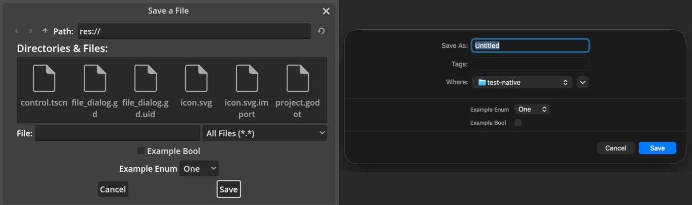
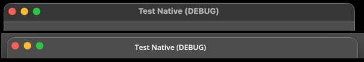
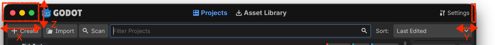
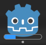

Tạo ứng dụng
Godot có hệ thống UI tích hợp phong phú, và kích thước bản phân phối nhỏ gọn khiến nó có thể là một lựa chọn thay thế phù hợp cho các framework như Electron hay Qt.
Trang này đưa ra hướng dẫn tạo ứng dụng không phải game bằng Godot, cùng với cách thực hiện các tác vụ phổ biến để cải thiện khả năng tích hợp với môi trường desktop.
Ghi chú
Trước hết và trên hết, Godot là một game engine. Điều này có nghĩa là việc tạo ứng dụng bằng Godot là sản phẩm phụ từ bộ tính năng của nó, chứ không phải trọng tâm phát triển chính.
Xem thêm
Hãy tham khảo Material Maker và Pixelorama để xem ví dụ về các ứng dụng mã nguồn mở được làm bằng Godot.
Thực hiện các tác vụ phổ biến
Tạo nhiều cửa sổ
Tính năng này chỉ được hỗ trợ trên Windows, macOS và Linux (chỉ X11/XWayland, không hỗ trợ ở chế độ Wayland gốc).
Bạn có thể tạo thêm cửa sổ bằng node class_Window. Các cửa sổ có thể được di chuyển, thay đổi kích thước, thu nhỏ và đóng độc lập với cửa sổ ứng dụng chính.
Tuy nhiên, nếu bạn đóng cửa sổ chính, tất cả các cửa sổ khác cũng sẽ bị đóng vì việc đóng cửa sổ chính sẽ kết thúc tiến trình. Bạn có thể tránh điều này bằng cách thu nhỏ cửa sổ chính, đặt thuộc tính unfocusable của nó thành true (để ẩn nó khỏi thanh tác vụ và trình chuyển tác vụ), sau đó tạo thêm các node Window ngay khi khởi động. Trong trường hợp này, hãy nhớ cung cấp một cách khác để thoát ứng dụng, chẳng hạn như một biểu tượng khay hệ thống.
Giới hạn kích thước cửa sổ
Hầu hết ứng dụng chỉ có thể kết xuất đúng khi cửa sổ đạt một kích thước tối thiểu nhất định. Với một số trường hợp cụ thể hơn, bạn cũng có thể muốn áp đặt kích thước cửa sổ tối đa.
Giới hạn kích thước có thể được áp dụng bằng các thuộc tính min_size và max_size trên node Window. Hãy nhớ nhân các giới hạn kích thước này theo hệ số tỷ lệ của ứng dụng (xem Co giãn cho màn hình hiDPI để biết chi tiết).
Mẹo
Xin nhắc lại, bạn có thể lấy node Window gốc để đặt thuộc tính cho nó bằng cách gọi get_window() trên bất kỳ Node nào.
Dùng hộp thoại file gốc của hệ điều hành
Tính năng này chỉ được hỗ trợ trên Windows, macOS, Linux và Android.
Theo mặc định, Godot dùng bản cài đặt class_FileDialog riêng cho hộp thoại file. Tuy nhiên, bạn có thể dùng hộp thoại file gốc của hệ điều hành thay thế. Người dùng thường ưa chuộng cách này hơn, vì hộp thoại file gốc tích hợp tốt hơn với môi trường desktop và mang lại trải nghiệm quen thuộc hơn.
Bạn có thể chọn dùng hộp thoại file gốc bằng cách bật thuộc tính use_native_dialog trên node FileDialog. Việc này phải được thực hiện trên từng node FileDialog dùng trong dự án, vì không có cài đặt dự án nào điều khiển hành vi này trên toàn cục.

So sánh giữa FileDialog tiêu chuẩn (trái) và hộp thoại file gốc (phải) trên macOS
Ghi chú
Xem mô tả thuộc tính để biết chi tiết về hỗ trợ nền tảng.
Ngoài ra, trên macOS, hộp thoại file gốc không được hỗ trợ khi tính năng nhúng game được bật trong trình chỉnh sửa. Để thử nghiệm tính năng này khi chạy dự án, hãy đảm bảo bạn tắt nhúng game bằng cách chuyển sang màn hình , nhấp vào biểu tượng ngoài cùng bên phải trên thanh phía trên và bỏ chọn .
Tạo biểu tượng trong khay hệ thống
Tính năng này chỉ được hỗ trợ trên Windows và macOS.
Bạn có thể tạo một hoặc nhiều biểu tượng trong khay hệ thống (còn gọi là vùng thông báo) bằng node class_StatusIndicator. Ngoài tooltip, node này có thể được gán một node class_PopupMenu để hiển thị menu thả xuống khi nhấp vào biểu tượng.
StatusIndicator cũng có signal pressed được phát ra khi biểu tượng được nhấp. Hãy dùng signal này để thực hiện một hành động mà không hiển thị menu thả xuống, hoặc thực hiện các hành động khác nhau tùy vào nút chuột được nhấn.
Sau khi tạo biểu tượng khay hệ thống, bạn có thể cũng muốn triển khai hành vi "thu nhỏ khi đóng". Nghĩa là khi người dùng cố đóng ứng dụng bằng nút X của trình quản lý cửa sổ, ứng dụng sẽ thu nhỏ xuống khay hệ thống. Để làm vậy, hãy gắn script này vào một scene Autoload có StatusIndicator làm node gốc:
extends StatusIndicator
# Disable this behavior when running from the editor with game embedding,
# as it doesn't cooperate well.
var tray_icon_supported = (
DisplayServer.has_feature(DisplayServer.FEATURE_STATUS_INDICATOR)
and not Engine.is_embedded_in_editor()
)
func _ready():
visible = false
if tray_icon_supported:
get_tree().auto_accept_quit = false
get_window().focus_entered.connect(
func():
# Hide the tray icon when the window gains focus,
# which means it was restored from its minimized state.
visible = false
)
pressed.connect(
func(_mouse_button, _position):
# Restore the application when the tray icon is clicked.
get_window().mode = Window.MODE_WINDOWED
)
func _notification(what):
if not tray_icon_supported:
return
match what:
NOTIFICATION_WM_CLOSE_REQUEST:
get_window().mode = Window.MODE_MINIMIZED
# Show the tray icon.
visible = true
Xem Xử lý yêu cầu thoát để biết chi tiết về cách ghi đè hành vi khi người dùng cố đóng ứng dụng. Việc xử lý điều này rất quan trọng khi người dùng có thay đổi chưa lưu, để tránh mất dữ liệu.
Ghi chú
Khi có nhiều node StatusIndicator, thứ tự của chúng trong khay hệ thống được xác định bởi thứ tự chúng được thêm vào scene tree.
Dùng client-side decorations
Tính năng này chỉ được hỗ trợ trên macOS.
Nhiều ứng dụng hiện đại dùng client-side decorations (CSD) thay vì dựa vào trình quản lý cửa sổ của hệ điều hành để vẽ thanh tiêu đề và viền cửa sổ (server-side decorations). Điều này cho phép tùy biến giao diện nhiều hơn và tích hợp tốt hơn với UI của ứng dụng.
Hiện tại Godot chỉ hỗ trợ client-side decorations trên macOS. Bạn có thể dùng tính năng này bằng cách bật cài đặt dự án display/window/size/extend_to_title.

So sánh giữa trang trí cửa sổ tiêu chuẩn (trên) và client-side decorations (dưới) trên macOS
Sau khi bật client-side decorations, viền cửa sổ sẽ không còn hiển thị, và các nút thu nhỏ/phóng to/đóng sẽ hiển thị chồng lên ứng dụng. Bạn cần đảm bảo ứng dụng chừa đủ lề ở phía trên để các nút hiển thị thoải mái, đồng thời hiển thị tiêu đề cửa sổ bằng node Label hoặc tương tự.
Để điều chỉnh UI tùy theo việc client-side decorations có được bật hay không, hãy dùng DisplayServer.has_feature và kiểm tra thêm giá trị hiện tại của Window.extend_to_title (chính là thứ mà cài đặt dự án thay đổi):
func _ready():
if DisplayServer.has_feature(FEATURE_EXTEND_TO_TITLE) and get_window().extend_to_title:
# Adjust UI for client-side decorations (a MarginContainer node
# can be useful here). Also set the window title to be displayed
# according to the native window title.
$WindowTitle.visible = true
$WindowTitle.text = get_window().title
if OS.is_debug_build():
$WindowTitle.text += " (DEBUG)"
Để đặt tiêu đề cửa sổ đúng vị trí, hãy cân nhắc dùng DisplayServer.window_get_safe_title_margins(), phương thức này trả về một Vector3 trong đó x là lề trái, y là lề phải (sẽ tăng khi hệ thống dùng bố cục chữ từ phải sang trái), và z là chiều cao. Ngoài ra, bạn có thể gọi DisplayServer.window_set_window_buttons_offset() để điều chỉnh vị trí các nút đóng/thu nhỏ/phóng to (thường để căn giữa chúng theo chiều dọc).

Lề tiêu đề an toàn khi dùng client-side decorations trên macOS
Ghi chú
Trên macOS, client-side decorations không được hỗ trợ khi tính năng nhúng game được bật trong trình chỉnh sửa. Để thử nghiệm tính năng này khi chạy dự án, hãy đảm bảo bạn tắt nhúng game bằng cách chuyển sang màn hình , nhấp vào biểu tượng ngoài cùng bên phải trên thanh phía trên và bỏ chọn .
Hiển thị trạng thái tiến trình trên thanh tác vụ/Dock
Tính năng này chỉ được hỗ trợ trên Windows và macOS.
Ứng dụng có thể báo cáo trạng thái tiến trình cho hệ điều hành, trạng thái này có thể được hiển thị trên biểu tượng ở thanh tác vụ hoặc Dock. Trạng thái này gồm một trạng thái (đang hoạt động, tạm dừng, lỗi) và phần trăm hoàn thành. Bạn có thể dùng nó để hiển thị tiến trình khi người dùng không tập trung vào ứng dụng.

Báo cáo tiến trình trong Dock trên macOS
Việc này thường được thực hiện bằng cách đồng bộ tiến trình của node class_ProgressBar với tiến trình được báo cáo cho hệ điều hành:
func set_progress(value, indeterminate = false):
$ProgressBar.value = value
$ProgressBar.indeterminate = indeterminate
if $ProgressBar.indeterminate:
get_window().set_taskbar_progress_state(DisplayServer.PROGRESS_STATE_INDETERMINATE)
else:
get_window().set_taskbar_progress_state(DisplayServer.PROGRESS_STATE_NORMAL)
# The taskbar progress value must be between `0.0` and `1.0`
# (values outside this range are clamped).
# ProgressBar provides a `ratio` property that represents its current progress
# as a value between `0.0` and `1.0`.
get_window().set_taskbar_progress_value($ProgressBar.ratio)
Có nhiều trạng thái tiến trình: không có tiến trình (ẩn thanh tiến trình), không xác định, bình thường, tạm dừng, lỗi. Hãy xem tài liệu tham khảo lớp để biết chi tiết.
Bạn cũng có thể dùng Window.request_attention() để làm cửa sổ nhấp nháy trên thanh tác vụ (hoặc nảy lên trong Dock trên macOS). Ví dụ, điều này có thể dùng để thu hút sự chú ý của người dùng sau khi một thao tác dài hoàn tất.
Ghi chú
Báo cáo tiến trình không được hỗ trợ khi tính năng nhúng game được bật trong trình chỉnh sửa. Để thử nghiệm tính năng này khi chạy dự án, hãy đảm bảo bạn tắt nhúng game bằng cách chuyển sang màn hình , nhấp vào biểu tượng ngoài cùng bên phải trên thanh phía trên và bỏ chọn .
Gửi thông báo desktop
Hiện tại Godot chưa hỗ trợ sẵn việc gửi thông báo desktop.
Tuy nhiên, trên macOS và Linux, bạn có thể dùng lần lượt các tiện ích dòng lệnh osascript và notify-send để gửi thông báo desktop:
func send_notification(title, message):
var app_name = ProjectSettings.get_setting("application/config/name")
if app_name.is_empty():
app_name = "Unnamed Project"
if OS.has_feature("macos") and not OS.is_sandboxed():
# Note that this will not work if the project is exported in sandbox mode
# (e.g. for the Mac App Store).
OS.execute("osascript", [
"-e",
'display notification \\"%s\\" with title \\"%s\\" subtitle \\"%s\\"' % [
message,
app_name,
title,
]
])
elif OS.has_feature("linuxbsd"):
OS.execute("notify-send", ["--app-name", app_name, title, message])
func _ready():
send_notification("Success", "Operation completed successfully.")
Tiếc là trên Windows không có công cụ tương đương có sẵn.
Ghi nhớ vị trí và kích thước cửa sổ giữa các phiên
Godot không hỗ trợ sẵn việc ghi nhớ vị trí và kích thước cửa sổ giữa các phiên, nhưng bạn có thể tự triển khai bằng script. Một ví dụ cơ bản có hỗ trợ thiết lập nhiều màn hình là một Autoload với script sau:
extends Node
# Use a dedicated configuration file for the window state.
# This way, the application's other configuration files are left
# untouched and can be put in version control without unnecessary diffs
# being produced.
const CONFIG_WINDOW_PATH = "user://window.ini"
var config_file = ConfigFile.new()
func _enter_tree():
config_file.load(CONFIG_WINDOW_PATH)
# Do not restore previous window state if running from the editor
# with game embedding enabled.
if not Engine.is_embedded_in_editor():
var window_screen = config_file.get_value("main", "screen", -1)
if window_screen is int:
get_window().current_screen = window_screen
var window_mode = config_file.get_value("main", "mode", -1)
if window_mode is Window.Mode:
get_window().mode = window_mode
var window_position = config_file.get_value("main", "position", -1)
if window_position is Vector2i:
get_window().position = window_position
var window_size = config_file.get_value("main", "size", -1)
if window_size is Vector2i:
get_window().size = window_size
func _exit_tree():
# Save the current window state when the application is quit normally.
# In a real world scenario, it's recommended to also save this information
# regularly (e.g. with a Timer node), so that the window state can be
# restored after a crash or when terminated externally.
config_file.set_value("main", "screen", get_window().current_screen)
config_file.set_value("main", "mode", get_window().mode)
config_file.set_value("main", "position", get_window().position)
config_file.set_value("main", "size", get_window().size)
config_file.save(CONFIG_WINDOW_PATH)
Ghi chú
Ví dụ trên chỉ theo dõi vị trí của cửa sổ chính. Trong các ứng dụng tạo nhiều cửa sổ, bạn sẽ cần lưu và tải vị trí và kích thước của từng cửa sổ riêng biệt.
Ẩn cửa sổ trong lúc hiển thị màn hình splash
Với một số ứng dụng, bạn có thể muốn ẩn màn hình splash để vẽ một màn hình splash tùy chỉnh có thanh tiến trình (hoặc thậm chí không có màn hình splash nào, nếu ứng dụng khởi động nhanh).
Godot không hỗ trợ sẵn việc ẩn cửa sổ trong lúc hiển thị màn hình splash, nhưng bạn có thể làm được điều này bằng cách dùng một cửa sổ trong suốt rất nhỏ trong cài đặt dự án, sau đó thay đổi kích thước cửa sổ và tắt độ trong suốt khi scene chính đã được tải.
Để làm vậy, cài đặt dự án cần được cấu hình như sau:
application/boot_splash/bg_color đặt thành màu đen trong suốt (RGBA: 0, 0, 0, 0).
display/window/size/window_width_override đặt thành
1.display/window/size/window_height_override đặt thành
1.
Bạn có thể dùng script này làm Autoload để khôi phục các cài đặt ban đầu sau khi màn hình khởi động (splash screen) hiển thị xong:
extends Node
func _enter_tree():
# Wait a frame to be rendered before restoring the window properties.
# Otherwise, properties will be restored too early and the window border
# will show up around a transparent window.
await get_tree().process_frame
get_viewport().transparent_bg = false
get_window().transparent = false
get_window().borderless = false
get_window().size = Vector2i(1152, 648)
Hiển thị ứng dụng dưới dạng lớp phủ (overlay)
Bạn có thể hiển thị cửa sổ ứng dụng dưới dạng lớp phủ (overlay) luôn nằm trên các cửa sổ khác. Điều này hữu ích cho các ứng dụng như widget hoặc công cụ giám sát hệ thống.
Để làm vậy, hãy bật tất cả các cài đặt dự án sau:
-
Điều này ngăn lớp phủ nhận đầu vào từ bàn phím, đồng thời ẩn nó khỏi thanh tác vụ (taskbar) và trình chuyển tác vụ. Lớp phủ vẫn có thể nhận đầu vào chuột (xem bên dưới).
Hãy nhớ định vị và thay đổi kích thước cửa sổ bằng script, vì người dùng thường không thể di chuyển cửa sổ không viền.
Để cho phép đầu vào chuột đi xuyên qua tới ứng dụng phía sau, hãy đặt thuộc tính mouse_passthrough thành true trên Window đang được vẽ dưới dạng lớp phủ. Bạn cũng có thể định nghĩa một đa giác trong mouse_passthrough_polygon để một số vùng trên lớp phủ vẫn chặn được đầu vào chuột.
Ngoài ra, bạn có thể muốn đặt thuộc tính exclude_from_capture thành true để lớp phủ không xuất hiện trong ảnh chụp màn hình hoặc bản ghi hình. Gợi ý này chỉ được triển khai trên Windows và macOS, và chỉ hoạt động theo khả năng tốt nhất có thể, nên không được dùng nó như một biện pháp bảo mật tuyệt đối hay DRM.
Ghi chú
Hiển thị dưới dạng lớp phủ không được hỗ trợ khi bật nhúng game (game embedding) trong trình chỉnh sửa. Để thử tính năng này khi chạy dự án, hãy tắt nhúng game bằng cách chuyển sang màn hình , nhấp vào biểu tượng ngoài cùng bên phải trên thanh phía trên và bỏ chọn .
Ngoài ra, hãy lưu ý rằng lớp phủ không thể hiển thị trên một ứng dụng khác nếu ứng dụng đó dùng chế độ toàn màn hình độc quyền (exclusive fullscreen). Thay vào đó, ứng dụng kia phải dùng toàn màn hình không viền (borderless fullscreen) thì lớp phủ mới hiển thị được.
Cũng có những vấn đề đã biết khi hiển thị cửa sổ trong suốt trên Windows với cấu hình GPU lai (như NVIDIA Optimus). Việc chuyển renderer có thể giúp khắc phục vấn đề này.
Trên Linux với X11, độ trong suốt sẽ không hoạt động nếu người dùng đã tắt compositing trong cài đặt trình quản lý cửa sổ.
Co giãn cho màn hình hiDPI
Các màn hình hiện đại có mật độ điểm ảnh rất khác nhau, nghĩa là thường cần một hệ số co giãn khác để đảm bảo các thành phần UI dễ đọc. Hệ số co giãn cũng có thể được cung cấp dưới dạng tùy chỉnh thủ công cho người dùng, để ứng dụng vẫn dễ sử dụng.
Khả năng hỗ trợ nhiều độ phân giải của Godot rất phù hợp để co giãn ứng dụng khi được cấu hình đúng. Hãy làm theo hướng dẫn trong phần ứng dụng không phải game của tài liệu Nhiều độ phân giải.
Ghi chú
Hiện tại Godot chỉ hỗ trợ đọc hệ số co giãn màn hình từ cài đặt hệ điều hành trên macOS, Android và Linux (chỉ Wayland). Trên Linux (X11) và Windows, bạn cần cung cấp tùy chọn co giãn thủ công để người dùng điều chỉnh tỷ lệ UI khi cần.
Tích hợp trình đọc màn hình
Trình đọc màn hình cho phép người khiếm thị sử dụng ứng dụng bằng cách đọc to các thành phần UI và cung cấp các điều khiển điều hướng. Màn hình chữ nổi Braille là một cách tiếp cận khác, cũng dựa vào thông tin trợ năng để hoạt động đúng.
Godot tự động bật hỗ trợ trình đọc màn hình nếu phát hiện có trình đọc màn hình đang chạy. Bạn có thể cấu hình điều này trong Project Settings bằng accessibility/general/accessibility_support để tắt nó trong những trường hợp không mong muốn. Bạn cũng có thể buộc bật nó, điều này hữu ích khi dùng các công cụ gỡ lỗi trợ năng mà Godot không nhận diện là trình đọc màn hình.
Godot dùng thư viện AccessKit để tích hợp trình đọc màn hình.
Mẹo
Vì hỗ trợ trình đọc màn hình dùng chính ứng dụng trình đọc màn hình để phát âm thanh (thay vì dự án Godot), nó vẫn hoạt động ngay cả khi audio driver được đặt thành Dummy trong cài đặt dự án như mô tả bên dưới.
Bạn nên thử nghiệm ứng dụng với các trình đọc màn hình phổ biến trên các nền tảng mục tiêu để đảm bảo trải nghiệm tốt cho người dùng khiếm thị. Ví dụ gồm NVDA trên Windows, VoiceOver trên macOS và Orca trên Linux.
Để hỗ trợ trình đọc màn hình đạt mức dễ sử dụng tốt, bạn cần bỏ ra khá nhiều công sức. Bạn cần định nghĩa nhãn trợ năng bằng các thuộc tính Control.accessibility_name và Control.accessibility_description, đồng thời đảm bảo UI được đọc theo thứ tự hợp lý khi trình đọc màn hình đọc.
Xem thêm
Xem thêm Chuyển văn bản thành giọng nói về tính năng chuyển văn bản thành giọng nói, tách biệt với trình đọc màn hình.
Cài đặt dự án được khuyến nghị
Tích hợp với desktop
Để ứng dụng tích hợp tốt hơn với môi trường desktop, bạn có thể đặt các cài đặt dự án sau như sau:
Bật application/config/use_custom_user_dir và đặt application/config/custom_user_dir_name thành một tên phù hợp cho ứng dụng. Điều này đảm bảo cài đặt và tệp của người dùng được lưu trong một thư mục riêng thay vì thư mục Godot mặc định. Theo quy ước, nên dùng kiểu viết thường (normal case) trên Windows (ví dụ
Application Name) và kebab-case (ví dụapplication-name) trên macOS và Linux.Cấu hình các biểu tượng gốc (native icon) phù hợp với hướng dẫn thiết kế của hệ điều hành bằng application/config/windows_native_icon (định dạng ICO) và application/config/macos_native_icon (định dạng ICNS). Mặc định, Godot sẽ tự động tạo biểu tượng gốc dựa trên biểu tượng dự án, nhưng điều này không phải lúc nào cũng tối ưu.
Trên Windows, dùng tệp ICO được thiết kế thủ công cho phép bạn dùng các biểu tượng khác nhau cho các độ phân giải khác nhau. Bạn có thể dùng điều này để tạo thiết kế riêng ở độ phân giải thấp nhằm dễ nhìn hơn.
macOS có hướng dẫn về biểu tượng ứng dụng khác biệt đáng kể so với các nền tảng khác. Dùng thiết kế biểu tượng gốc được tùy chỉnh riêng giúp ứng dụng hòa hợp hơn với môi trường desktop.
Tắt display/window/subwindows/embed_subwindows để các cửa sổ phụ dùng giao diện (theme) của hệ điều hành và được xem như cửa sổ gốc của hệ điều hành.
Hiệu năng
Dưới đây là một số cài đặt dự án bạn có thể dùng để giảm mức sử dụng CPU, GPU và bộ nhớ:
Hãy dùng renderer Compatibility nếu bạn không cần các tính năng chỉ có ở Forward+ hoặc Mobile. Renderer Compatibility có yêu cầu phần cứng thấp hơn và thường khởi động nhanh hơn, nên là lựa chọn tốt hơn cho ứng dụng. Việc tạo cửa sổ mới cũng nhanh hơn với renderer này.
Bật application/run/low_processor_mode để giảm mức sử dụng CPU và GPU. Điều này khiến dự án chỉ kết xuất một frame khi có thứ gì đó trên màn hình thay đổi.
Lưu ý rằng trong một số trường hợp, dự án phải vẽ lại liên tục (ví dụ khi một hoạt ảnh hoặc shader dùng
TIMEđang hiển thị). Nếu kéo dài, điều này sẽ tiêu tốn đáng kể điện năng, dẫn đến giảm thời lượng pin và quạt kêu to hơn. Để xử lý các tình huống dự án vẽ lại liên tục, bạn có thể bật ở phía trên trình chỉnh sửa, rồi chạy dự án. Các vùng được vẽ lại sẽ được tô đỏ trong một giây. Bạn có thể điều chỉnh màu và thời lượng tô sáng bằng các cài đặt dự án debug/canvas_items/debug_redraw_time và debug/canvas_items/debug_redraw_color.Tốc độ khung hình tối đa mà ứng dụng có thể vẽ được xác định bởi application/run/low_processor_mode_sleep_usec. Giá trị này được tính bằng micro giây mỗi frame, nên FPS tối đa có thể tính bằng công thức
1000000.0 / sleep_usec. Mặc định, giá trị này là6900, tương ứng với tối đa khoảng 145 FPS. Bạn có thể tăng giá trị này để giảm thêm mức sử dụng CPU và GPU, đổi lại trải nghiệm kém mượt hơn.
Tắt display/window/energy_saving/keep_screen_on để màn hình có thể tắt theo cài đặt nguồn điện của hệ điều hành khi ứng dụng không hoạt động. Hành vi này thường không mong muốn trong game (ví dụ khi xem cutscene), nhưng trong ứng dụng, ta muốn màn hình tắt để tiết kiệm điện khi người dùng không chủ động sử dụng ứng dụng.
Đặt audio/driver/driver thành
Dummy(phân biệt chữ hoa chữ thường) nếu ứng dụng không cần đầu ra hoặc đầu vào âm thanh. Điều này ngăn audio server khởi động, giúp tiết kiệm một phần tài nguyên CPU và bộ nhớ. Nó cũng giúp ứng dụng không xuất hiện trong danh sách ứng dụng đang phát âm thanh trong bộ trộn âm thanh của hệ điều hành. Trên macOS, điều này còn đảm bảo ứng dụng không ngăn thiết bị chuyển sang chế độ ngủ.Đặt physics/2d/physics_engine và physics/3d/physics_engine thành
Dummynếu ứng dụng không cần mô phỏng vật lý (kể cả chọn đối tượng bằng chuột - object picking). Điều này ngăn các physics server khởi động, giúp tiết kiệm tài nguyên CPU và bộ nhớ. Nó cũng cho phép trình chỉnh sửa cấu hình biên dịch engine tự động phát hiện rằng dự án không dùng vật lý.Hãy cân nhắc đặt display/window/vsync/vsync_mode thành Disabled để giảm độ trễ đầu vào. Điều này đặc biệt hữu ích với các dự án nhạy cảm với độ trễ như ứng dụng vẽ. Việc này có thể làm tăng mức tiêu thụ điện và gây xé hình (screen tearing), nên bạn nên cung cấp tùy chọn để người dùng bật/tắt V-Sync khi cần.
Hãy tham khảo Material Maker và Pixelorama để xem ví dụ về các ứng dụng mã nguồn mở được làm bằng Godot.
Di động
Khi thiết kế ứng dụng cho nền tảng di động, có một số cài đặt bạn có thể bật để cải thiện khả năng sử dụng:
Android:
Bật input_devices/pointing/android/enable_long_press_as_right_click để người dùng có thể thực hiện thao tác nhấp chuột phải bằng cử chỉ nhấn giữ.
Bật input_devices/pointing/android/enable_pan_and_scale_gestures để người dùng có thể kéo (pan) và thu phóng bằng cử chỉ chạm. Điều này sẽ giả lập các sự kiện class_InputEventPanGesture và class_InputEventMagnifyGesture, vốn có thể được xử lý trong code của dự án và thường được phát ra bởi touchpad của laptop.
Tắt trong export preset Android để hiển thị thanh trạng thái và thanh điều hướng của hệ thống khi ứng dụng đang hoạt động. Ngoài ra, bật để thanh trạng thái và biểu tượng điều hướng trở nên trong mờ và được vẽ đè lên ứng dụng. Nếu làm vậy, hãy đảm bảo ứng dụng chừa đủ không gian cho thanh trạng thái và biểu tượng điều hướng. Bạn có thể dùng DisplayServer.get_display_safe_area và DisplayServer.get_display_cutouts để truy vấn vùng mà ứng dụng có thể vẽ an toàn.
iOS:
Tắt display/window/ios/hide_home_indicator để hiển thị thanh chỉ báo Home (home indicator) phía trên ứng dụng.
Tắt display/window/ios/hide_status_bar để thanh trạng thái vẫn hiển thị khi ứng dụng đang hoạt động.
Tắt display/window/ios/suppress_ui_gesture để các cử chỉ UI hoạt động ngay lập tức, không cần thực hiện hai lần.
Thêm unit test
Trong một ứng dụng, việc thiết lập unit test thường mang lại nhiều giá trị hơn so với trong game. Bạn có thể dùng nó để phát hiện lỗi hồi quy (regression) một cách tự động, điều thường dễ thực hiện hơn trong ứng dụng, nơi logic có thể được tách biệt rõ ràng.
GDScript không có framework unit test tích hợp sẵn, nhưng có một số plugin unit test do cộng đồng duy trì:
Với C# và GDExtension (C++, Rust, v.v.), bạn có thể dùng các framework kiểm thử tiêu chuẩn như NUnit hoặc doctest.
Tối ưu kích thước bản phân phối
Vì các ứng dụng không phải game thường không dùng nhiều phần lớn của engine, như âm thanh hay chức năng 3D, bạn có thể biên dịch một export template được tối ưu để giảm kích thước tệp. Điều này cũng cải thiện thời gian khởi động, đặc biệt trên nền tảng web, nơi kích thước binary liên quan trực tiếp đến tốc độ khởi tạo.
Mức giảm kích thước thường đáng kể (so với kích thước dự án), vì ứng dụng chứa ít asset lớn hơn so với game. Xem Tối ưu hóa kích thước bản build để biết thêm cách thực hiện.
Tạo bản phân phối chỉ gồm một tệp thực thi
Mặc định, Godot tạo một tệp PCK chứa dữ liệu dự án nằm cạnh tệp thực thi. Điều này nghĩa là nếu tệp thực thi bị di chuyển mà không di chuyển tệp PCK cùng lúc, ứng dụng sẽ không chạy. Điều này không lý tưởng cho ứng dụng, vốn ngày càng được phân phối dưới dạng một tệp thực thi duy nhất.
Để ứng dụng hoàn toàn tự chứa trong một tệp thực thi duy nhất, bạn có thể bật Embed PCK trong các tùy chọn export preset. Điều này sẽ nhúng dữ liệu PCK vào trong tệp thực thi, để ứng dụng có thể được di chuyển mà không bị hỏng. Nó cũng cho phép chạy ứng dụng trực tiếp từ tệp nén ZIP mà không cần giải nén trước.
Ghi chú
Việc nhúng PCK có giới hạn kích thước tùy theo nền tảng. Các ứng dụng rất lớn (vài GB) có thể không dùng được tính năng này trên mọi nền tảng. Hãy xem tài liệu export của nền tảng mục tiêu để biết thêm chi tiết.
Tạo ứng dụng portable
Một ứng dụng được gọi là portable khi nó có thể chạy mà không cần cài đặt, và cấu hình của nó hoàn toàn nằm trong thư mục mà nó được giải nén vào. Điều này cho phép đặt các tệp ứng dụng vào ổ USB hoặc thiết bị tương tự, và chạy trên các máy khác nhau mà không cần trải qua quá trình cài đặt.
Chế độ tự chứa của chính trình chỉnh sửa Godot hiện chưa thể dùng trong dự án. Tuy nhiên, bạn vẫn có thể chọn lưu các tệp cấu hình của riêng mình vào thư mục chứa tệp thực thi như sau:
var config_path = OS.get_executable_path().get_base_dir().path_join("config.ini")
# Then use `config_path` to save/load configuration files using ConfigFile or similar.
Bạn có thể muốn để chế độ portable là tùy chọn vì không phải lúc nào nó cũng được mong muốn. Thông thường, việc này được thực hiện bằng cách phát hiện sự tồn tại của một tệp cụ thể trong thư mục của tệp thực thi (ví dụ tệp có tên portable.txt), và chỉ dùng thư mục của tệp thực thi cho cấu hình nếu tệp đó tồn tại.
Cảnh báo
Hãy nhớ rằng điều này chỉ hoạt động nếu ứng dụng được giải nén vào vị trí có quyền ghi. Sẽ xảy ra lỗi quyền truy cập nếu tệp thực thi được chạy từ vị trí chỉ đọc, như C:\Program Files trên Windows.
Tạo trình cài đặt
Trong khi game thường được cài đặt qua các launcher như Steam hoặc tải về dưới dạng ZIP, ứng dụng thường được phân phối dưới dạng trình cài đặt (installer) để tích hợp tốt hơn với desktop. Trình cài đặt có thể thực hiện các thao tác như thêm lối tắt vào Start Menu hoặc desktop, thiết lập liên kết tệp (file association), v.v. Trình cài đặt cũng có thể được chạy tự động qua dòng lệnh, khiến chúng được ưa chuộng hơn trong môi trường doanh nghiệp.
Godot không có hỗ trợ tích hợp sẵn để tạo trình cài đặt cho các dự án đã xuất. Tuy nhiên, bạn vẫn có thể tự tạo trình cài đặt bằng các công cụ bên thứ ba.
Dưới đây là danh sách chưa đầy đủ các công cụ có thể dùng để tạo trình cài đặt:
Windows: Inno Setup, NSIS
Nếu bạn có chứng chỉ ký mã (code signing certificate), hãy nhớ ký cả trình cài đặt lẫn tệp thực thi của dự án. Để làm vậy, hãy ký tệp thực thi của dự án đã xuất, tạo trình cài đặt chứa dự án đã xuất, rồi ký thủ công trình cài đặt bạn vừa tạo.
macOS: create-dmg
Linux: Flatpak
Có một Godot BaseApp có thể dùng làm nền tảng để tạo gói Flatpak cho dự án Godot. Xem Flatpak của Pixelorama để có ví dụ về một Flatpak sử dụng BaseApp này.
Tài nguyên
Các trang sau đề cập đến những tác vụ thường gặp trong ứng dụng không phải game:
class_ConfigFile (dùng để lưu tùy chọn của người dùng)